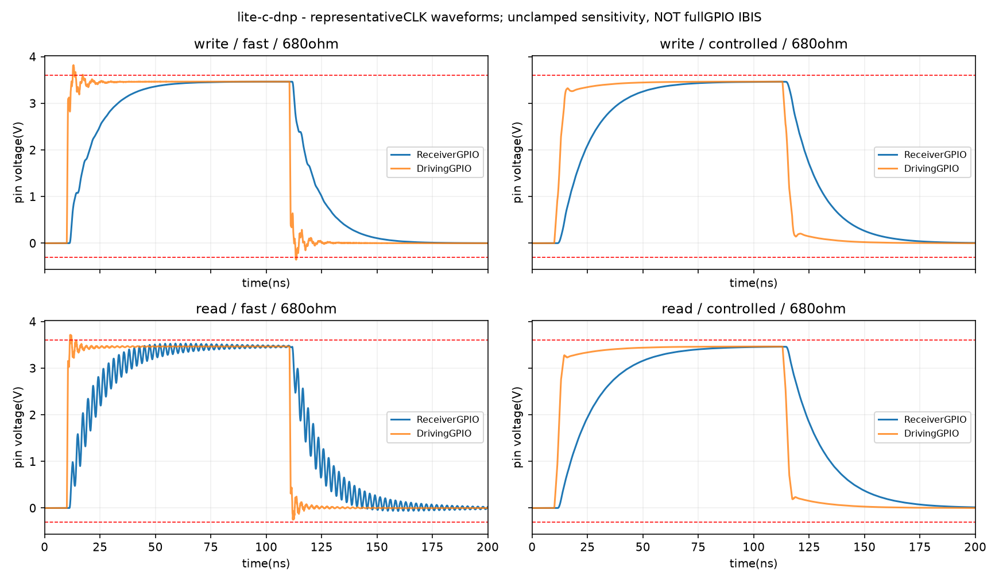
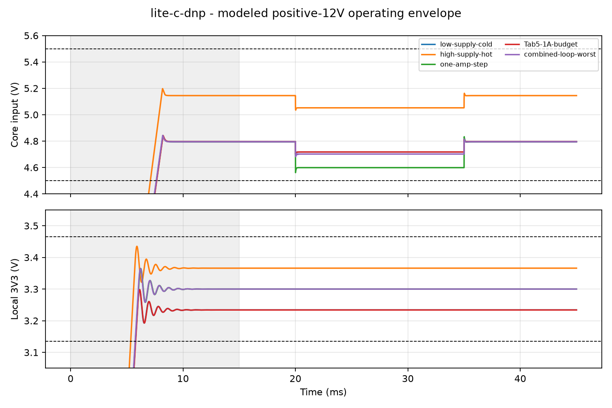
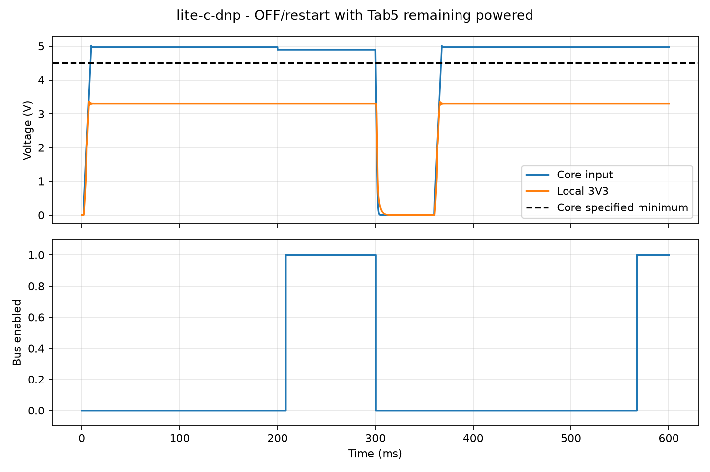
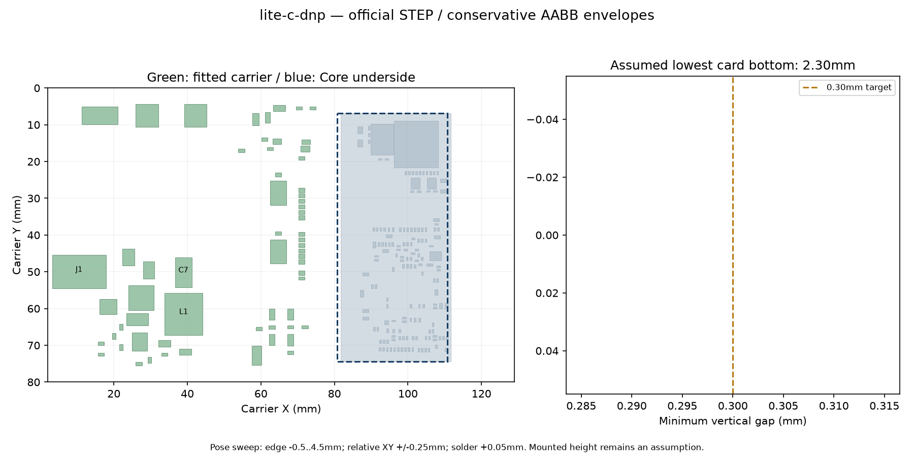

案C：評価結果・BoM
HDMI／PDは回路を残して未実装、125×78mm。2026年10月25日更新。
目的に対する判定
初期1MHz・弱い駆動／SLOW設定・規定12V電源を使うPoCの製作候補です。基板製作に進むための条件付き評価であり、Tab5との実通信、DDR3、GPUの実機動作が完了したという判定ではありません。
最低成功条件は8bitパラレル通信とCore上DDR3の利用、そのための安定した電源です。HDMIは最低成功条件から外します。40MHz転送や最終アクセラレータ性能は今回確認していません。
独立した実回路図・PCB・製造データ照合：28項目合格。DRC違反0・未接続0。元の高価格版は保持しています。
今回の修正と再評価
パラレル15本の直列抵抗を33Ωから680Ωへ変更し、反射と整定時間を再評価しました。A/BのHDMI下部品は低背化し、HPDはNPN反転バッファと100nFフィルタ・Core手前10kΩ、独立対GNDの保護へ変更しました。CではHDMI専用部品はDNPを維持します。
J4はPCBA、J6/J7/J8はPCBA対象外です。Core本体はユーザー支給。最終の部品・実装区分は下のBoMで確認できます。
パラレル通信・電源断保護
実PCBから15信号を抽出し、伝送線路・バススイッチ・仮定したTab5/Core内部配線を含めて過渡解析しました。実在の接続試験RTLも27MHzシステムクロックで位相を振って評価しています。
初期運用は1MHz、DATAのsetup/hold各250ns以上、方向切替の待ち500ns以上、FPGAはLVCMOS33・最弱4mA・SLOW、Tab5も弱い駆動を使います。未校正の強い高速駆動では電圧逸脱を生じるため、全GPIO設定に対する合格とはしていません。
| 検査 | 判定 | 条件・数値 |
|---|---|---|
| 15 channels, both directions, distributed RLC receiver envelope | pass | {"criteria": "-0.3V <= GPIO receiver <=3.6V, 5% settling <250ns", "min_V": -0.0901418419753588, "max_V": 3.5551418419753587, "settle_max_ns": 89.84782290470775} |
| Configured weak/SLOW driving-source pad envelope | pass | {"criteria": "declared Rs60..100ohm, edge3..8ns, source/receiver GPIO within -0.3..3.6V"} |
| Extreme uncalibrated fast-source pad stress | fail | {"qualification": "The sensitivity model violates conservative voltage limits; not a measured absolute-maximum violation and not silently waived", "min_V": -0.40546057911952227, "max_V": 3.870460579119522, "parameters": "10ohm Thevenin,0.5ns edge,unextracted Tab5/Core internal paths80mm each,2nH GPIO package,no clamp model"} |
| SN74CB3Q3245 external pins, uncalibrated strong-fast stress | fail | {"criteria": "Design excursion envelope -0.5..5.5V; recommended operating0..5.5V, absolute-0.5..7V and clamp-current exception are separate vendor ratings", "min_V": -2.559345677726734, "max_V": 6.024345677726734, "reason": "Fast sensitivity model is unclamped; negative undershoot and positive voltage excursions are not certified by reporting only the positive peak"} |
| SN74CB3Q3245 external pins, configured weak/SLOW | pass | {"min_V": -5.491642132726682e-05, "max_V": 3.465054916421327} |
| Actual periodic1MHz write/read sampled thresholds | pass | {"criteria": "write VIH2.0/VIL0.8V; read VIH2.59875/VIL0.78375V; sample250ns after transition"} |
| Actual portable RTL at27MHz, all37 phase positions | pass | {"phase_count": 37, "transactions_per_phase": 69, "delay_budget_ns": 100, "turnaround_guard_ns": 500} |
| RLC segmentation sensitivity | pass | {"scope": "Representative longestCLK A/B(shared)/C, doubled segmentation", "receiver_peak_change_max_mV": 4.846745483963577, "settling_change_max_ns": 0.3025260587381311} |
| Distant-plane carrier160ohm sensitivity | pass | {"scope": "Representative longestCLK A/B(shared)/C; does not reconstruct every return path", "receiver_max_V": 3.5256048510670013} |
| Settled DC logic levels | pass | {"scope": "3.3V rails +/-5%, normal-operation input pulls disabled, FPGA Voh/VOL at<=0.1mA; source datasheet limits, not just ideal model rails", "write_high_margin_V": 0.5005199999999999, "write_low_margin_V": 0.44602, "read_high_margin_V": 0.33553599999999983, "read_low_margin_V": 0.5830359999999999} |
| Power-good/ARM MOSFET OE transient | pass | {"criteria": "No enable with either PG absent or ARM open; enable only after both PG and ARM"} |
| Powered-off DC leakage | pass | {"criteria": "TI specified <=1uA/channel, <=15uA aggregate for15 populated channels; no zero-leakage claim"} |
| Abrupt power collapse guarantee | uncertain | {"reason": "Supervisor20us assertion is typical only; assumed Core regulator collapse and off-state feedthrough are not fully characterized"} |
| Physical DDR3/controller functionality | uncertain | {"reason": "Current linked RTL implements ID/echo/invert/CRC/timeout; no board top or DDR3 controller is implemented in those files"} |


電源系
TPS5430のメーカー公開モデルを実行し、単純基準回路で11ms完走しました。実案全回路のメーカー全モデルは0.518msで数値停止したため成功扱いせず、実案の条件一覧は平均化モデルで評価しています。基準回路の比較はRMS差0.974mV・最大差6.059mVで、個体差を含む全面的な校正ではありません。LDOはメーカーの典型波形に合わせた近似で、個体差を保証するモデルではありません。通常10mA以下の条件と、追加の50mA急変で失敗する条件を分けています。C11の有効容量6.6µF・遅い制御の感度では約3.151Vが下限で、±5%目標に対する余裕は約16mVです。C7の低ESR条件も250ms評価しましたが、解析した位相余裕6.58°は小さく、実機の波形確認が必要です。
| 検査 | 判定 | 条件・数値 |
|---|---|---|
| ldo-DCbias-minimum | pass | {"criteria": "During valid positive input, after startup and outside intentional OFF: Core 4.5..5.5V, local 3V3 3.135..3.465V", "core_min_V": 4.875295331886022, "core_max_V": 4.988398012258396, "local_3V3_min_V": 3.151332190406231, "local_3V3_max_V": 3.29718776319238, "complete": true, "case_json": "results/lite-c-dnp-ldo-DCbias-minimum.json"} |
| nominal | pass | {"criteria": "During valid positive input, after startup and outside intentional OFF: Core 4.5..5.5V, local 3V3 3.135..3.465V", "core_min_V": 4.87526423842783, "core_max_V": 4.988498762111013, "local_3V3_min_V": 3.2999973739311708, "local_3V3_max_V": 3.3000040814359552, "complete": true, "case_json": "results/lite-c-dnp-nominal.json"} |
| low-supply-cold | pass | {"criteria": "During valid positive input, after startup and outside intentional OFF: Core 4.5..5.5V, local 3V3 3.135..3.465V", "core_min_V": 4.700544109657956, "core_max_V": 4.8131294780554335, "local_3V3_min_V": 3.233995768891481, "local_3V3_max_V": 3.234003934584007, "complete": true, "case_json": "results/lite-c-dnp-low-supply-cold.json"} |
| high-supply-hot | pass | {"criteria": "During valid positive input, after startup and outside intentional OFF: Core 4.5..5.5V, local 3V3 3.135..3.465V", "core_min_V": 5.034533409184032, "core_max_V": 5.162526739963385, "local_3V3_min_V": 3.3659972795010242, "local_3V3_max_V": 3.3660042281595097, "complete": true, "case_json": "results/lite-c-dnp-high-supply-hot.json"} |
| Tab5-1A-budget | pass | {"criteria": "During valid positive input, after startup and outside intentional OFF: Core 4.5..5.5V, local 3V3 3.135..3.465V", "core_min_V": 4.70058305333242, "core_max_V": 4.813112161476244, "local_3V3_min_V": 3.2339953529300884, "local_3V3_max_V": 3.2340039345582214, "complete": true, "case_json": "results/lite-c-dnp-Tab5-1A-budget.json"} |
| ldo-minimum-load-steps | pass | {"criteria": "During valid positive input, after startup and outside intentional OFF: Core 4.5..5.5V, local 3V3 3.135..3.465V", "core_min_V": 4.875295748169265, "core_max_V": 4.988490618091104, "local_3V3_min_V": 3.19999550941286, "local_3V3_max_V": 3.293666060188105, "complete": true, "case_json": "results/lite-c-dnp-ldo-minimum-load-steps.json"} |
| ldo-minimum-slow-loop | pass | {"criteria": "During valid positive input, after startup and outside intentional OFF: Core 4.5..5.5V, local 3V3 3.135..3.465V", "core_min_V": 4.875295664699505, "core_max_V": 4.988498845448234, "local_3V3_min_V": 3.1782408018101194, "local_3V3_max_V": 3.357097809793059, "complete": true, "case_json": "results/lite-c-dnp-ldo-minimum-slow-loop.json"} |
| softstart-fast | pass | {"criteria": "During valid positive input, after startup and outside intentional OFF: Core 4.5..5.5V, local 3V3 3.135..3.465V", "core_min_V": 4.875270638415359, "core_max_V": 4.988498762111065, "local_3V3_min_V": 3.2999994415611713, "local_3V3_max_V": 3.300000867931132, "complete": true, "case_json": "results/lite-c-dnp-softstart-fast.json"} |
| softstart-slow | pass | {"criteria": "During valid positive input, after startup and outside intentional OFF: Core 4.5..5.5V, local 3V3 3.135..3.465V", "core_min_V": 4.87528306592684, "core_max_V": 4.988498762110898, "local_3V3_min_V": 3.299987712719203, "local_3V3_max_V": 3.3000169305244316, "complete": true, "case_json": "results/lite-c-dnp-softstart-slow.json"} |
| combined-loop-worst | pass | {"criteria": "During valid positive input, after startup and outside intentional OFF: Core 4.5..5.5V, local 3V3 3.135..3.465V", "core_min_V": 4.681441868955167, "core_max_V": 4.81450089216617, "local_3V3_min_V": 3.299993931022047, "local_3V3_max_V": 3.3000039706281354, "complete": true, "case_json": "results/lite-c-dnp-combined-loop-worst.json"} |
| long-low-esr | pass | {"criteria": "During valid positive input, after startup and outside intentional OFF: Core 4.5..5.5V, local 3V3 3.135..3.465V", "core_min_V": 4.681530377405631, "core_max_V": 4.814530827019692, "local_3V3_min_V": 3.299993876750825, "local_3V3_max_V": 3.3000039976087896, "complete": true, "case_json": "results/lite-c-dnp-long-low-esr.json"} |
| slow-input-ramp | pass | {"criteria": "During valid positive input, after startup and outside intentional OFF: Core 4.5..5.5V, local 3V3 3.135..3.465V", "core_min_V": 4.970955043425514, "core_max_V": 4.970955043425713, "local_3V3_min_V": 3.2999999999724365, "local_3V3_max_V": 3.3000000000427816, "complete": true, "case_json": "results/lite-c-dnp-slow-input-ramp.json"} |
| switch-cycle | pass | {"criteria": "During valid positive input, after startup and outside intentional OFF: Core 4.5..5.5V, local 3V3 3.135..3.465V", "core_min_V": 4.87526423842783, "core_max_V": 4.970955390437167, "local_3V3_min_V": 3.2997825569876658, "local_3V3_max_V": 3.3001399095302033, "complete": true, "case_json": "results/lite-c-dnp-switch-cycle.json"} |
| switch-cycle-PG | pass | {"criteria": "During valid positive input, after startup and outside intentional OFF: Core 4.5..5.5V, local 3V3 3.135..3.465V", "core_min_V": 4.877083911522995, "core_max_V": 4.970955425486957, "local_3V3_min_V": 3.29978326457456, "local_3V3_max_V": 3.3001420916236865, "complete": true, "case_json": "results/lite-c-dnp-switch-cycle-PG.json"} |
| one-amp-step | pass | {"criteria": "Additional sensitivity; failures retained, do not redefine the normal local-3V3 <=10mA PoC budget", "core_min_V": 4.557688134755555, "local_3V3_min_V": 3.299993830668301, "local_3V3_max_V": 3.300003970876779, "complete": true} |
| Tab5-plus-Core1A | pass | {"criteria": "Additional sensitivity; failures retained, do not redefine the normal local-3V3 <=10mA PoC budget", "core_min_V": 4.557563988283523, "local_3V3_min_V": 3.2999938286387795, "local_3V3_max_V": 3.300003970859273, "complete": true} |
| ldo-50mA-sensitivity | fail | {"criteria": "Additional sensitivity; failures retained, do not redefine the normal local-3V3 <=10mA PoC budget", "core_min_V": 4.8753000349936855, "local_3V3_min_V": 3.019945709026499, "local_3V3_max_V": 3.3647022020422175, "complete": true} |
| ldo-loop-slow | fail | {"criteria": "Additional sensitivity; failures retained, do not redefine the normal local-3V3 <=10mA PoC budget", "core_min_V": 4.8752917229331905, "local_3V3_min_V": 2.8058062591286723, "local_3V3_max_V": 3.4955512427598565, "complete": true} |
| ldo-loop-fast | pass | {"criteria": "Additional sensitivity; failures retained, do not redefine the normal local-3V3 <=10mA PoC budget", "core_min_V": 4.875247421946489, "local_3V3_min_V": 3.259009763724375, "local_3V3_max_V": 3.4312922488039623, "complete": true} |
| powerdown-while-armed | uncertain | {"criteria": "K50 is an isolation/brownout detector, not a guarantee that Core voltage remains >=4.5V whenever bus is enabled", "nominal_PG_threshold_V": 4.38, "typical_assertion_delay_s": 2e-05, "assumed_release_delay_s": 0.2, "time_bus_high_below_Core_spec_s": 0.00011999999999945388, "minimum_Core_voltage_while_model_bus_enabled_V": 4.243945438995867, "limits": "Vout approximates U10 sense; physical sense resistance, maximum assertion delay and Core-bank hold-up not characterized. Stop communication before OFF/brownout, release ARM and reinitialize DDR3 after stable power."} |
| long-reverse-input | uncertain | {"criteria": "Positive 12V is the required operating condition. Reverse-input absolute ratings are not guaranteed by series diode alone", "reverse_hold_s": 1.9999999999999998, "predicted_VIN_min_V": -0.41119068567833356, "regulator_output_max_V": 4.062211361412545e-09, "model_limit": "SS54/TVS leakage/low-current forward clamp are approximate; internal IC input clamp not characterized"} |
| low-ESR-long-hold | pass | {"criteria": "L12u/C176u/ESR2mOhm/PWM-response1.25us, 250ms transient; no growing or sustained averaged oscillation during 0.5A hold", "early_settled_pp_V": 8.970602038971265e-14, "late_settled_pp_V": 8.881784197001252e-14, "minimum_analytical_phase_margin_deg": 6.575687689268307, "limits": "Small positive margin is sensitive to unmodeled delay/process effects; capacitor min ESR is not specified. Does not prove switching-cycle or IC process-corner stability."} |



規定12V±5%、室内PoC・周囲0〜50℃のモデル条件、Core通常0.5A、局所3.3Vの通常負荷10mA以下、外部3.3V負荷なしが条件です。K50のPGはCore入力4.5V以上を保証しません。電源が安定して500ms待ってからARMし、初品では温度も測定します。意図した電源断前にクロックを停止してARMを解除し、電圧低下後はFPGA／DDR3を再初期化します。逆接の長時間保持・急激な電源喪失に対する絶対定格保証はありません。
Core下面・高い部品との干渉
灰色の壊れたような3D表示を実体として扱わず、公式Core STEPの部品形状と実PCBの部品外形を照合しました。差し込み位置−0.5〜4.5mm、Core下面高さ2.3mm以上、XYずれ±0.25mm、はんだ高さ0.05mmを仮定した保守的な外接箱の比較で、必要隙間0.3mmを確認しました。ソケットの実装高さ・公差をメーカーが保証した範囲ではなく、実装プレビュー／初品で確認する条件が残ります。

HDMI・PD未実装の扱い
専用回路・パターンを残し、PCBAから除外します。今回のPoCはバレル12Vとパラレル通信で進めます。HDMIやPDの後付けには専用部品一式と再確認が必要で、端子だけの追加で動作する扱いにはしません。
案Aと同じ秋月ボタン・実装基準へ更新
SW1/SW2は秋月115969 TS-06104 H4.3mm用の専用ランド・配置・局所配線へ変更し、手実装は計2個です。旧Panasonic品を購入しないでください。DRC違反0・未配線0、ERCエラー0（警告165件は残存）、Core干渉の再確認は合格。電源・通信の配線と他部品のパッドの同一性を比較して従来解析を継承し、変更後の全基板を新たに波形シミュレーションしたものではありません。
HDMIとUSB PDは回路・配線を残して全専用部品DNPのままです。今回の注文で購入・後付けする必要はありません。 J4ソケットはPCBA必須、Coreは支給、GPIO/PMODソケットはPCBA対象外を維持します。
SW3はDigiKey調達。J1の秋月候補は無加工互換未確定です。この案はバレル給電のため、注文前に適合ジャックの選定が必要です。
Core DDR3と関連プロジェクトへの引き継ぎ
Core上のDDR3と電源回路は公式のまま使います。キャリアの5V・IOとNC端子に加わる負荷は評価していますが、Core全体のDDR3信号品質とメモリコントローラの完全なシミュレーションではありません。
Linux側の物理通信ドライバ、GPU側のDDR3／最終ボードトップは未実装です。基板製作後、電源確認→1MHz CRC往復→公式DDR3試験→メモリREAD／WRITE→GPU・アクセラレータの順で実証します。Linuxの透過的なメインRAM増設を達成したものではありません。
BoMと実装範囲
PCBAは58部品・27品目。J4 SO-DIMMソケットはPCBA必須。Tang Primer 20K Core本体はユーザー支給で、PCBA発注BoMに含めません。
「別途取り付け」は手はんだ等が必要です。GPIO・PMODのJ6/J7/J8はPCBA対象外で、必要な場合のみユーザーが取り付けます。DNP部品は原則取り付けません。取付穴の行は購入する電子部品ではありません。
| 参照番号 | 部品・値 | 数量/枚 | フットプリント | LCSC品番 | 実装区分 |
|---|---|---|---|---|---|
| F1 | PTC 3A hold | 1 | Fuse:Fuse_1812_4532Metric | C47002391 | PCBA実装 |
| D1,D4 | SS54 | 2 | Diode_SMD:D_SMA | C22452 | PCBA実装 |
| D3 | SMBJ15A | 1 | Diode_SMD:D_SMB | C699013 | PCBA実装 |
| C1 | 100u/35V | 1 | Capacitor_SMD:CP_Elec_6.3x7.7 | C2983388 | PCBA実装 |
| U2 | TPS5430DDAR | 1 | Package_SO:TI_SO-PowerPAD-8_ThermalVias | C9864 | PCBA実装 |
| C3 | 10n | 1 | Capacitor_SMD:C_0603_1608Metric | C57112 | PCBA実装 |
| L1 | 15uH MS1040-150M | 1 | carrier:L_COILMX_MS1040 | C380054 | PCBA実装 |
| R6 | 10k | 1 | Resistor_SMD:R_0603_1608Metric | C25804 | PCBA実装 |
| R7 | 3.3k | 1 | Resistor_SMD:R_0603_1608Metric | C22978 | PCBA実装 |
| R47,R48,R49,R50,R8 | 100k | 5 | Resistor_SMD:R_0603_1608Metric | C25803 | PCBA実装 |
| R9 | 15k | 1 | Resistor_SMD:R_0603_1608Metric | C22809 | PCBA実装 |
| C4,C5 | 10u/50V | 2 | Capacitor_SMD:C_1206_3216Metric | C13585 | PCBA実装 |
| C6 | 100n/50V | 1 | Capacitor_SMD:C_0603_1608Metric | C14663 | PCBA実装 |
| C7 | 220u/10V POSCAP | 1 | Capacitor_Tantalum_SMD:CP_EIA-7343-40_Kemet-Y | C242173 | PCBA実装 |
| U3 | XC6206P332MR-G | 1 | Package_TO_SOT_SMD:SOT-23 | C5446 | PCBA実装 |
| C10 | 10u/16V | 1 | Capacitor_SMD:C_1206_3216Metric | C13585 | PCBA実装 |
| C11 | 22u/10V | 1 | Capacitor_SMD:C_1206_3216Metric | C12891 | PCBA実装 |
| R10,R11,R12,R13,R14,R15,R16,R19,R20,R21,R22,R23,R24,R26,R27 | 680R | 15 | Resistor_SMD:R_0603_1608Metric | C23228 | PCBA実装 |
| J4 | SOCKET XDAP-4042044-20401 | 1 | carrier:SODIMM_XDAP_4042044_20401 | C22471982 | PCBA実装 |
| R42,R43,R44,R45 | 1k | 4 | Resistor_SMD:R_0603_1608Metric | C21190 | PCBA実装 |
| D5,D6,D7,D8 | LED | 4 | LED_SMD:LED_0603_1608Metric | C2286 | PCBA実装 |
| U7,U8 | SN74CB3Q3245PWR | 2 | Package_SO:TSSOP-20_4.4x6.5mm_P0.65mm | C470961 | PCBA実装 |
| C20,C21,C22,C23 | 100n | 4 | Capacitor_SMD:C_0603_1608Metric | C14663 | PCBA実装 |
| U9 | TPS3839G33DBZR | 1 | Package_TO_SOT_SMD:SOT-23 | C485802 | PCBA実装 |
| U10 | TPS3839K50DBZR | 1 | Package_TO_SOT_SMD:SOT-23 | C702204 | PCBA実装 |
| Q3,Q4 | 2N7002 | 2 | Package_TO_SOT_SMD:SOT-23 | C8545 | PCBA実装 |
| R46 | 22k | 1 | Resistor_SMD:R_0603_1608Metric | C31850 | PCBA実装 |
| J1 | DC 12V ONLY | 1 | Connector_BarrelJack:BarrelJack_Horizontal | 別途取り付け | |
| J3 | M5-BUS (to Tab5) | 1 | carrier:PinHeader_2x15_Tab5_Bottom | 別途取り付け | |
| SW1,SW2 | TS-06104 | 2 | carrier:SW_TS_06104_HandSolder | 別途取り付け | |
| SW3 | FPGA ON/OFF | 1 | Button_Switch_THT:SW_DIP_SPSTx01_Slide_9.78x4.72mm_W7.62mm_P2.54mm | 別途取り付け | |
| H1,H2,H3,H4,H5,H6 | M3 | 6 | MountingHole:MountingHole_3.2mm_M3 | 取付穴（電子部品の実装なし） | |
| JP1 | BUS ARM (open by default) | 1 | Connector_PinHeader_2.54mm:PinHeader_1x02_P2.54mm_Vertical | 別途取り付け | |
| D2 | SS54 | 1 | Diode_SMD:D_SMA | 未実装（DNP） | |
| J2 | USB-C PD in | 1 | Connector_USB:USB_C_Receptacle_GCT_USB4125-xx-x-0190_6P_TopMnt_Horizontal | 未実装（DNP） | |
| U1 | CH224K | 1 | Package_SO:SSOP-10-1EP_3.9x4.9mm_P1mm_EP2.1x3.3mm | 未実装（DNP） | |
| R1,R36,R37,R52 | 10k | 4 | Resistor_SMD:R_0603_1608Metric | 未実装（DNP） | |
| C2 | 1u/50V | 1 | Capacitor_SMD:C_0603_1608Metric | 未実装（DNP） | |
| R2 | 1k | 1 | Resistor_SMD:R_0603_1608Metric | 未実装（DNP） | |
| R17,R18,R25,R3,R4,R5 | 0R | 6 | Resistor_SMD:R_0603_1608Metric | 未実装（DNP） | |
| C8,C9 | 47u/10V | 2 | Capacitor_SMD:C_1206_3216Metric | 未実装（DNP） | |
| J5 | HDMI OUT | 1 | Connector_Video:HDMI_A_Molex_208658-1001_Horizontal | 未実装（DNP） | |
| C12,C13,C14,C15,C16,C17,C18,C19 | 100n | 8 | Capacitor_SMD:C_0402_1005Metric | 未実装（DNP） | |
| R28,R29,R32,R33,R34,R35 | 499R | 6 | Resistor_SMD:R_0603_1608Metric | 未実装（DNP） | |
| R30,R31 | 499R | 2 | Resistor_SMD:R_0402_1005Metric | 未実装（DNP） | |
| U4,U5,U6 | RCLAMP0524P | 3 | carrier:DFN2510-10L_RCLAMP0524P | 未実装（DNP） | |
| F2 | PTC 500mA | 1 | Fuse:Fuse_1206_3216Metric | 未実装（DNP） | |
| Q1,Q2 | 2N7002 | 2 | Package_TO_SOT_SMD:SOT-23 | 未実装（DNP） | |
| R38,R39 | 2.2k | 2 | Resistor_SMD:R_0603_1608Metric | 未実装（DNP） | |
| R40,R51 | 47k | 2 | Resistor_SMD:R_0603_1608Metric | 未実装（DNP） | |
| R41 | 100k | 1 | Resistor_SMD:R_0603_1608Metric | 未実装（DNP） | |
| J6 | PMOD1 | 1 | Connector_PinHeader_2.54mm:PinHeader_2x06_P2.54mm_Vertical | PCBA対象外・必要時にユーザー取り付け | |
| J7 | PMOD2 | 1 | Connector_PinHeader_2.54mm:PinHeader_2x06_P2.54mm_Vertical | PCBA対象外・必要時にユーザー取り付け | |
| J8 | GPIO pads | 1 | Connector_PinHeader_2.54mm:PinHeader_1x09_P2.54mm_Vertical | PCBA対象外・必要時にユーザー取り付け | |
| Q5 | MMBT3904 | 1 | Package_TO_SOT_SMD:SOT-23 | 未実装（DNP） | |
| C24 | 100n | 1 | Capacitor_SMD:C_0603_1608Metric | 未実装（DNP） |
製造候補CSVから生成。基板SHA-256: fcc2849f8588164b25819bb97db40d6de5f5792036fcc39e91ab4bd7a0ccf308。追加シミュレーションに伴う設計更新時はBoMも再生成します。
手実装品の購入先：秋月を優先
HDMI／USB PDは専用部品も含めDNPです。今回の発注ではHDMIの購入・手はんだは不要です。
SW1/SW2は秋月TS-06104専用ランドへ変更済みです。ヘッダー・ジャンパー・任意ソケットも秋月を優先し、SW3のみ他店調達が残ります。J1の秋月候補は無加工互換未確定で、購入確定品ではありません。この案はバレル入力を使うため、発注前にJ1の互換品を確定する必要があります。在庫は確認時点の表示で取り置きではありません。
| 対象 | 数量/枚 | 部品 | 購入先 | 適合・注意 |
|---|---|---|---|---|
| J3 | 1 | 2.54mm 2x15 male; PH-2x40SG cut to15 rows | 秋月 | 販売・在庫表示確認。基板裏面に実装。接点長6.1mmの標準品候補。Tab5との実物の間隔・差し込み深さは確認する。 |
| JP1 | 2ピン分 | PH-1x40SGを2ピンに切断 | 秋月 | 販売・在庫表示確認。BUS ARM用。ヘッダーだけでは有効にならず、確認後にショートピンを装着する。 |
| JP1用ショートピン | 1 | 2228AG / 2.54mm | 秋月 | 販売・在庫表示確認。初期は外す。GPIO所有権・電源・ファーム設定を確認してから装着。 |
| J6/J7（任意） | 1x6を計4個 | FH-1x6SG/RHを1コネクタ当たり2列並べる | 秋月 | 2.54mmピッチの候補・PCBA対象外。一体2x6ソケットではない。2x6のオスで列をそろえてから手はんだする案。筐体・相手コネクタとの高さは確認。最小PoCでは購入不要。 |
| J8（任意） | 1 | FH-1x9SG/RH | 秋月 | 販売確認・PCBA対象外。2.54mm 1x9メス。最小PoCでは購入不要。 |
| J1（12Vバレル入力） | 1 | 候補MJ-179PH、まだ購入確定しない | 秋月 | 販売確認／無加工互換は未確定。メーカー図の側端子Y=4.9mmと現基板4.7mmに差があり無加工互換は未確定。この案はバレル入力を使用するため、注文前に互換ジャックを確定する必要がある。USB PDを代替電源にはできない。 |
| SW1/SW2 | 各1 | TS-06104 H=4.3mm（秋月115969） | 秋月 | 販売・在庫確認／専用ランドへ設計変更済み。各1個、計2個。メーカー図p8の推奨ランド1.8×1.0mm、中心X=±4.1/Y=±2.25mm。左2端子A/B同電位、右C/D同電位。通常開・押下で導通。Panasonic品をこの新基板へ実装しない。 |
| SW3 | 1 | CTS206-1S | DigiKey（秋月統一の例外） | 販売・在庫表示確認。1回路・7.62mm列間のDIPスイッチ。秋月の2回路品をそのまま差し替えない。 |
| H1-H6 | 取付穴6か所 | M3ねじ／スペーサーは固定方法に合わせて選定 | 秋月等 | 長さ・固定方法未確定。穴そのものは購入部品ではない。リンクは寸法未確定の参考セットで、指定長の推奨ではない。 |
評価した版
PCB SHA-256（改行LF正規化）：fcc2849f8588164b25819bb97db40d6de5f5792036fcc39e91ab4bd7a0ccf308